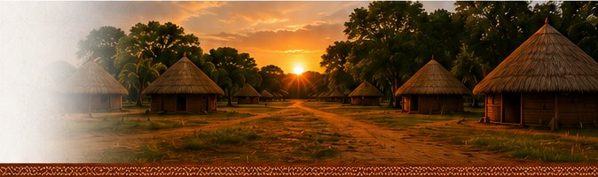
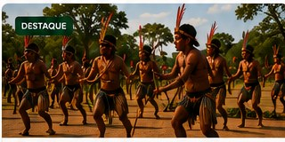
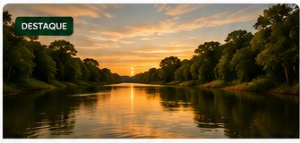
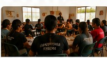
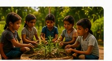

Informação e comunidade
Notícias
Acompanhe as notícias do povo Terena, informações, cultura e acontecimentos das aldeias e de Mato Grosso do Sul.
Últimas notícias em destaque

Festa do Kopenoti reúne aldeias Terena
Evento marca o início do novo ciclo e fortalece os laços entre as comunidades.
Ler notícia →
Projeto de proteção de nascentes avança nas aldeias
Iniciativa preserva recursos hídricos e promove educação ambiental entre os jovens.
Ler notícia →
Jovens Terena participam de oficina
Atividade fortalece a comunicação comunitária e valoriza as vozes da juventude.
Ler notícia →Artesãs Terena expõem trabalhos na feira
Peças de cerâmica, bijuterias e cestaria encantam o público.
Ler notícia →
Escola da Aldeia desenvolve horta escolar
Projeto integra alimentação saudável e cuidados com a natureza.
Ler notícia →